GoPxL 系统集成与通信 (Communicate)
📝 手册更新日志 (Changelog)
| 说明书版本 | 更新日期 | 更新者 | 更新说明 |
|---|---|---|---|
| V1.0 | 2026-5-27 |
Ruiyi Chen | 完成了大部分通讯的说明，剩下待补充 |
| V0.8 | 2026-04-01 |
Alfred Pu | 完成纯文字版本，还需要截图 |
在完成扫描成像（Acquire）和工具检测（Inspect）后，最后一步是将测量结果、Pass/Fail 判定或 3D 点云数据发送给外部系统。
在 GoPxL 的 Communicate (通信) 页面，您可以配置传感器与 PLC、机器人、剔除机构或定制上位机软件的交互逻辑。
{kind=link}
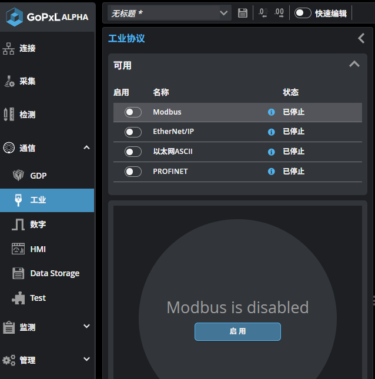
1. 硬件输入与输出 (Digital I/O)
通过传感器尾部的 I/O 线缆，GoPxL 可以直接与底层的硬件电气信号进行交互。
1.1 硬件输入信号 (Inputs)
- 触发信号 (Trigger)：接收光电传感器等外部设备的数字输入信号，用于精确控制传感器何时开始扫描。
- 编码器信号 (Encoder)：接收传送带编码器的 A/B/Z 相位信号，用于在运动过程中按固定物理间距（如每 0.1mm）触发扫描，确保 3D 比例不失真。
1.2 硬件输出与追踪 (Digital Output & Tracking)
数字输出通常用于直接控制执行机构（如气缸、报警灯）。 GoPxL 提供了一个非常强大的工业级功能：输出追踪 (Output Tracking) 。 在实际生产线上，传感器扫描位置与最终的废品剔除闸门之间通常有一段距离。GoPxL 允许您为数字输出设置“延迟”。由于传送带使用编码器或匀速运行，系统可以对目标进行“追踪标记”，在有缺陷的零件精确移动到剔除机构下方时，才触发数字输出信号 。
{kind=link}
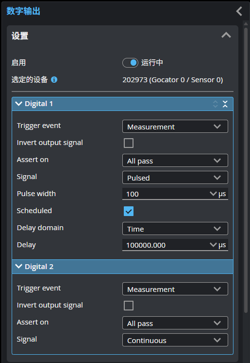
注意：不再支持模拟量与串口
与早期的 Gocator 6.x 固件不同，GoPxL 系统不再支持模拟量 (Analog) 和串行 (Serial) 输出 。建议全面转向基于以太网的工业协议。
2. 工业协议通信 (Industrial Protocols)
GoPxL 原生支持主流的以太网工业协议，方便与各家品牌的 PLC（如西门子、三菱、欧姆龙、罗克韦尔）无缝对接。
2.1 支持的协议
在 Communicate > Industrial 页面，您可以一键开启以下协议：
{kind=link}
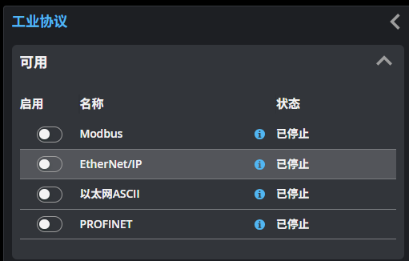
-
EtherNet/IP：常用于 Allen-Bradley / Rockwell PLC，支持隐式 (Implicit) 和显式 (Explicit) 消息传递，系统内置 EDS 文件供下载。
-
PROFINET：常用于 Siemens (西门子) PLC。
-
Modbus TCP：通用的工业标准协议，GoPxL 作为 Modbus Server（从站）运行。
-
Ethernet ASCII：基于字符串的轻量级以太网协议，适合通过简单的文本命令（如机械臂上位机）控制传感器。
2.2 配置输出映射 (Connections Map)
无论您选择哪种工业协议，将检测数据发送给 PLC 的配置逻辑是高度一致的：
- 开启协议：在 Available protocols 列表中打开对应协议的开关（如 EtherNet/IP）。
- 添加连接 (Add Connections)：在下拉菜单中选择您要输出的数据源（Source）。
- 可以是 Measurements (测量值)（如工具测量出的长、宽、高）。
- 可以是 System State (系统状态) 或 Stamps (时间戳/帧号) 。
- 管理地址 (Reindex)：添加后，数据会出现在底部的 Connections 列表中。系统会自动为它们分配寄存器地址。您可以通过拖拽改变顺序，或点击 Reindex... 重新整理内存地址排布，确保与 PLC 端的接收区一一对应 。
🎯 Modbus TCP通讯
- 开启modbus协议：工业协议->启用modbus->状态显示运行中。
{kind=link}
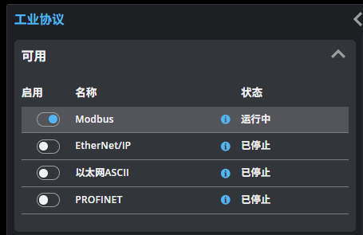
- 配置工具(非必需)：检测->拖取需要工具->勾选需要的输出。
- 配置输出：modbus页面->添加输出。输出包含有传感器信息和测量结果，按需要选择
{kind=link}
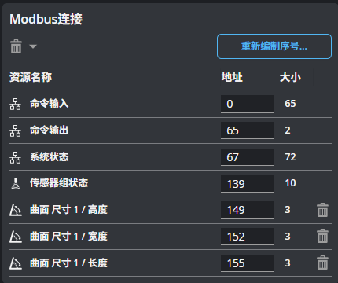
- 读取：在传感器modbus页面能看到每个测量值的地址和长度，在配置好IP、端口号、地址、长度等即可读取到short类型的数组,每3个寄存器一组存储一个数据。
- 数据解析：第一个为测量结果的正负号；第二个为决策值；第三个为测量值。接收到的数据除以1000即为mm单位的值，其中无效值为-32768。
{kind=link}
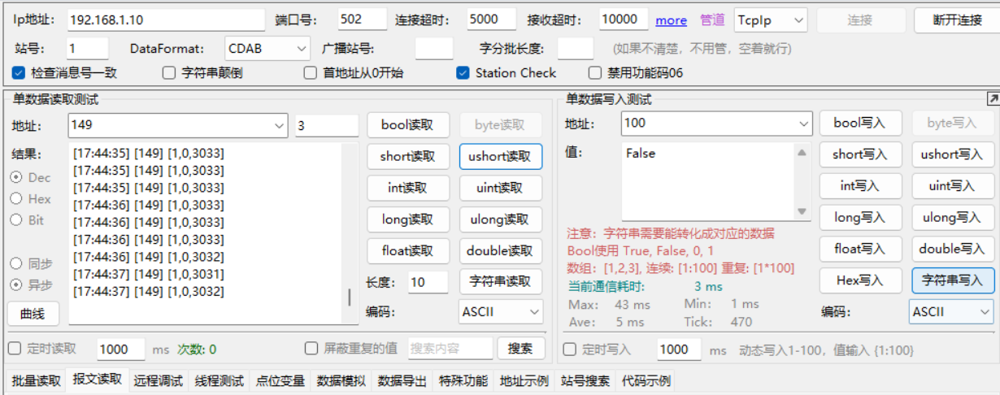
🎯 EtherNet/IP通讯
- 开启与配置：同样地设置好输出后启动传感器。注意，该通讯底层经过了CIP封装，并非简单的TCP/IP。
{kind=link}
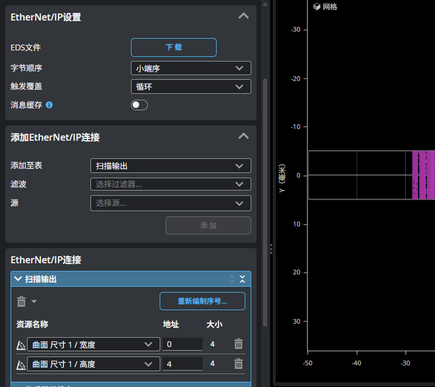
- 读取：启用EIP模拟器连接传感器接收数据，采用小端序接收（低位字节在前）。
- 数据解析：每个测量值是4个字节，通过组合成16进制后转化为10进制。此时单位是μm，除以1000即为mm单位。无效值为0、0、0、128。
- 解析示例：如下图 251 62 0 0 转化过程：
字节 0 (251) = 0xFB
字节 1 (62) = 0x3E
字节 2 (0) = 0x00
字节 3 (0) = 0x00
组合成十六进制数为：0x00003EFB，转换为十进制为 16123，除以1000即为 16.123 mm。
{kind=link}
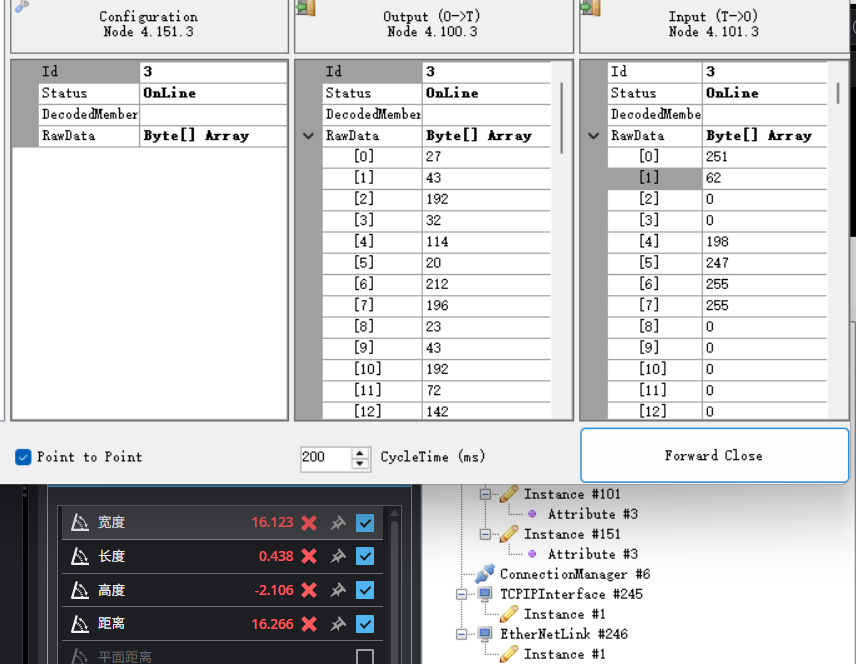
🎯 以太网ASCII通讯
- 开启与配置：设置好输出后启动传感器。选择“启用异步”，异步格式模式选择“标准”，并设置好IP和端口（默认8190）。
- 自定义格式：接收的数据格式可以直接在传感器端进行自定义配置。
{kind=link}
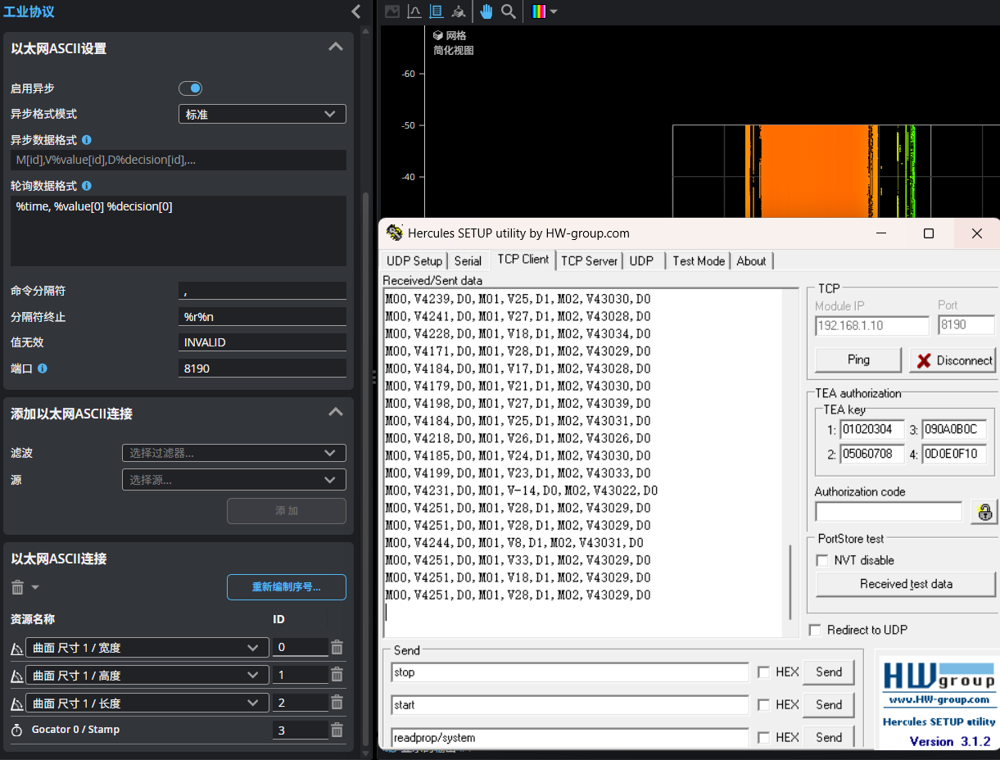
- 读取：连接成功后即可实时接收数据。
- 数据解析：接收到的数据单位同样为μm，遇到无效值时会直接显示为 INVALID。
{kind=link}
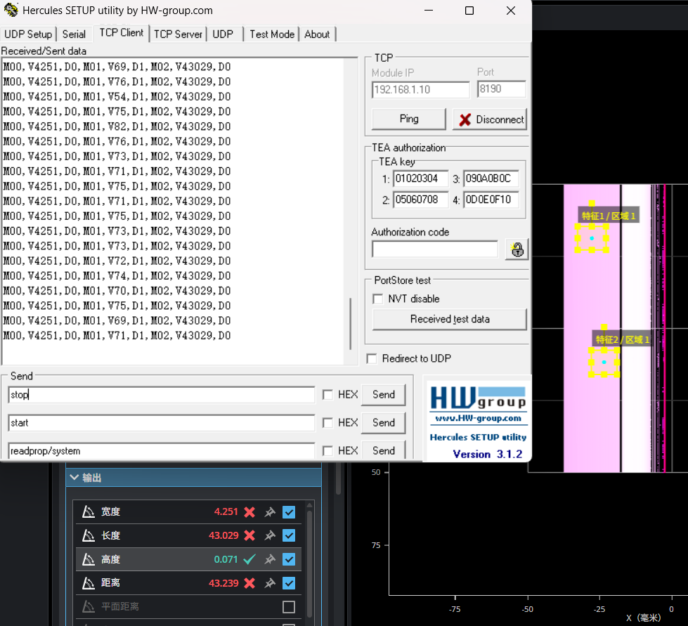
3. 双向交互：接收 PLC 的输入数据
除了输出，GoPxL 也可以接收来自 PLC 的数据并参与到工具链的计算中。
3.1 接收 PLC 动作指令 (Control Input)
通过协议的 Control Input 寄存器块，PLC 可以发送命令给传感器，例如：
** 开始/停止传感器扫描 。
** 动态切换 Job (任务) 文件，以适应不同产品的换型 。
** 触发系统标定 (Alignment) 。
这里演示通过以太网ASCII控制传感器开关、切换Job等，更多功能详见用户手册。

通过以太网ASCII控制传感器
3.2 用户数据输入工具 (User Data Input Tool)
如果您需要将 PLC 中的业务数据（例如：当前产品的批次号、条码字符串，或动态的公差阈值）传入 GoPxL，可以使用 User Data Input 工具 。 该工具会监听 EtherNet/IP 或 SDK 传来的自定义数据流，并将其转化为工具输出，供后续的检测工具（如条件逻辑）或数据导出服务（如命名导出的图像文件）使用 。
4. GoPxL 数据协议与 SDK (GDP & API)
对于不使用 PLC，而是由工控机（PC）使用 C/C++、C# 或 Python 开发定制上位机软件的场景，系统提供了 GoPxL 数据协议 (GDP)。
GDP协议通讯
- 开启 GDP：在 Communicate > GDP 页面配置，可选择输出最原始的 3D 轮廓、表面点云，以及所有的测量结果。 GoPxL SDK 与 REST API：GDP 协议配合官方免费提供的 GoPxL SDK 使用，客户端程序可以接收高速、大吞吐量的 3D 数据帧，同时也可以读取/写入系统配置。下面以 C# SDK 为例描述大致流程：
- 启用协议：在通讯列表中打开 GDP 数据协议，并在“Add Connections”处添加需要输出的信息。如果要获取工具输出，则需要提前配置好相关工具。
{kind=link}
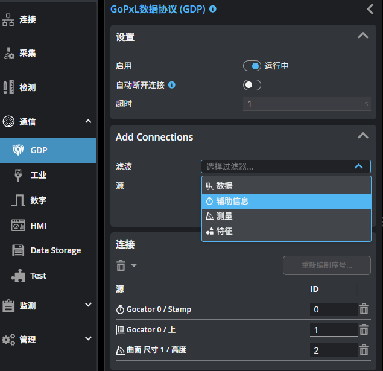
- 初始化工程：打开 C# SDK 工程，初始化整个解决方案，在“sample”里面选择需要的功能并将其设置成启动项。
点击展开/折叠 GoPxLSdkNet SDK C# 接口库列表
- GoPxLSdkNet SDK的C#接口库，不可运行。
- AlignSensorNet 传感器校准。
- BackupRestoreNet 传感器文件备份与恢复。
- ConfigureSensorNet 更改传感器配置。
- ConfigureToolNet 传感器添加工具，更改工具配置，并启用测量数据输出。
- DiscoverNet 在网络上发现传感器和GoPxL实例。
- MultilayerOutputsNet 光谱共焦传感器单层和多层点云输出。
- MultiSensorLayoutNet 多传感器连接与布局设置，包括多层数据输出。
- ReceiveAsyncNet 通过异步方式接收传感器的数据。
- ReceivelmageNet 2D相机的图像输出。
- ReceiveMeasurementNet 传感器内置工具的测量值输出。
- ReceiveMetricsNet 传感器指标值输出。
- ReceiveProfileNet 传感器轮廓数据输出。
- ReceiveSurfaceNet 传感器点云数据输出。
- ReplayDataNet 传感器数据记录设置、文件的保存与载入(.gprec)。
- SaveJobNet 传感器作业文件获取、设置、保存与加载。
{kind=link}
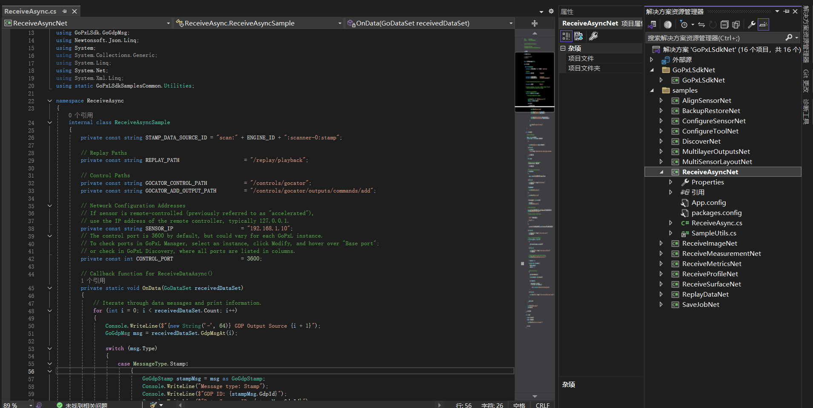
- 运行与读取：设置好 IP 地址与 GDP 的端口后，运行所需要的工程文件，在 CMD 命令行中即可实时看到传感器返回的信息。
{kind=link}
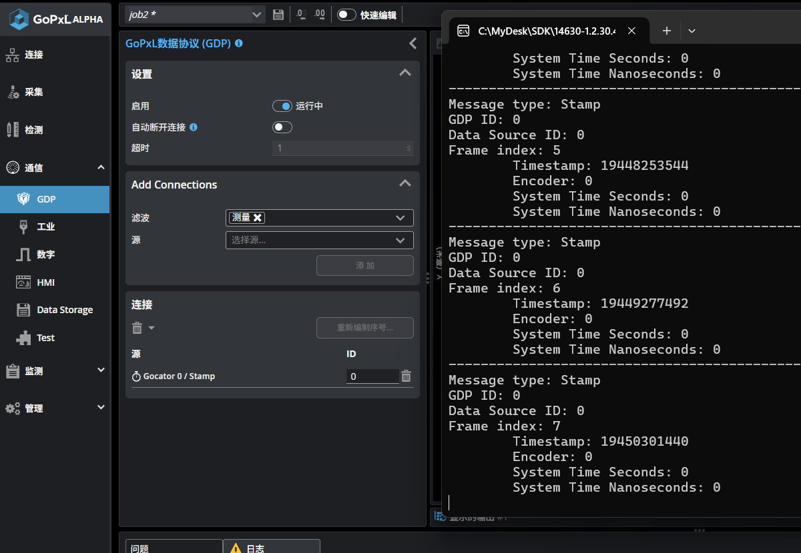
注意事项
- GDP设置：示例代码会包含一些GDP开启、添加输出等设置，如果您已经手动设置好，可能需要注释相关代码，以免报错。
- 同步/异步：实际的应用过程中大多数是使用异步接收数据，如果实在需要同步接收，则需要自行管理好时序、处理时间等问题，以免发生线程、内存冲突等问题。在SDK示例代码中测量值、轮廓、点云等数据输出都是同步的方式，需要异步接收则需要同时参考“ReceiveAsyncNet”这个工程。
5. 数据存储与自定义界面 (HMI)
-
数据导出 (Data Storage)：在 Communicate 页面中，您可以配置将扫描的原始数据或测量结果直接保存到远端的 FTP 服务器，或者（在 PC/GoMax 环境下）保存到本地文件夹，用于后续的追溯或 AI 模型训练 。
- FTP与SFTP核心差异对比表：
特性 FTP (File Transfer Protocol) SFTP (SSH File Transfer Protocol) 全称 文件传输协议 SSH 文件传输协议 底层协议 TCP SSH (Secure Shell) 安全性 明文传输（账号、密码和数据均不加密） 加密传输（所有数据、密码均高强度加密） 连接端口 使用多个端口（默认命令端口 21，数据端口随机） 仅使用一个端口（默认 22） 防火墙友好度 差（动态端口经常被防火墙拦截） 好（只需开放一个端口即可） 传输速度 理论上稍快（因为没有加密解密的开销） 稍慢（CPU需要时间进行加密解密） 认证方式 仅支持用户名和密码 支持用户名/密码，以及更安全的 SSH 密钥对 -
FTP/SFTP配置与通讯：这里用的是本地的FTP/SFTP模拟服务器，实际的应用场景多为工厂的云端服务器、MES系统等，如果是保存在本地电脑建议使用GDP的方式，会有更多的信息和功能。

FTP设置
- GoHMI 界面：GoPxL 内置了 GoHMI Designer。它允许您无需编写任何前端代码，即可拖拽生成一个基于网页的、供现场操作员使用的自定义监控大屏（支持 PC、触摸屏或移动设备）。